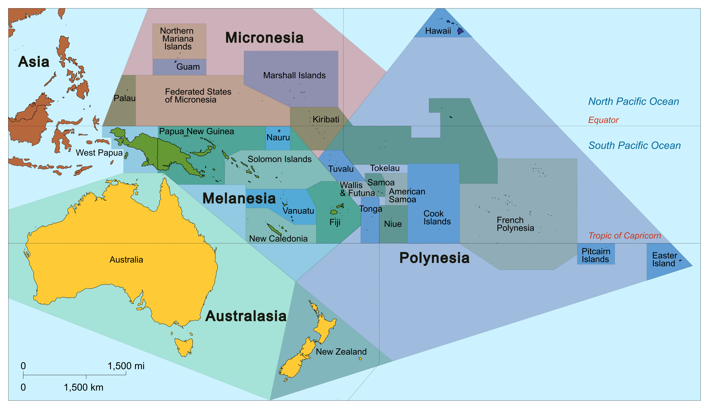

Pidgins and Creoles
LING 150C, Week 8
![]()
October 13, 2026
Journal (5 min)
Choose one option and write silently. We’ll hear from a couple of people afterward.
Option A
Think of a time you tried to communicate with someone who didn’t share your language. What did you do to get your message across? What worked, and what didn’t?
Option B
What have you heard people say about Pidgin (Hawai’i Creole) or other “mixed” languages? Who said it, and what did they seem to think about the people who speak it?
Reminders
Writing Assignment 1 Final is due Friday, October 23 at 11:59pm. Drafts and feedback are back, so revise from your comments.
Midterm Exam is Tuesday, October 27, in class and open-notes (no laptops). The review sheet is coming this week.
Office Hours: Wednesdays/Fridays 1:30-2:30pm in Moore Hall 574 or on Zoom
- If you can’t make that time, email me to set up a different time.
Today’s Plan
- Bridging a language gap: simplification and accommodation
- What are pidgins and creoles?
- Pidgins in Pacific history (pidgin Māori, Hiri Motu, plantation pidgins)
- The Melanesian Pidgins and how Bislama grew into a creole
- what Solomon Islanders say about Pijin
- Bislama in Vanuatu’s courts and classrooms
- Looking ahead to Thursday: Hawai’i Creole
Bridging a Language Gap
Activity: Make It Easier (4 min)
In pairs. Which version of each sentence would be easier to understand for someone who is still learning English? Why?
- You can utilize a blade to perforate the exterior.
- Use a knife to poke holes in the outside.
- Samson explained that he hadn’t seen that Delilah was holding some scissors.
- Samson said this: Delilah was holding some scissors. He didn’t see her.
Then, pairs: rewrite “I was supposed to meet him at the farmers market, but the bus was running late.” for a visitor who knows only basic English. What did you change?
Two Strategies: Simplification and Accommodation
Simplification
- Plainer, non-technical vocabulary, avoiding dialect words
- Combining simple sentences with and/but (coordination), or just placing them side by side (parataxis)
- That’s not my teddy. His tummy is too shiny…
Accommodation
- Speakers converge on a compromise between their ways of speaking
- It shows up in speed, volume, vowels, sentence structure, and vocabulary
- You may have noticed that you slow down when talking with someone who talks slowly
In radical contact, simplification and accommodation can produce new, distinct varieties: pidgins and creoles.
What Are Pidgins and Creoles?
Creoles and Pidgins Around the World
West Africa
- Nigerian Pidgin (75 million speakers)
- Krio (Sierra Leone)
The Caribbean
- Haitian Creole (Haiti, 10-12 million speakers)
- Jamaican Patois
- Papiamento (Aruba, Bonaire, Curaçao)
- blends Portuguese, Spanish, Dutch, and English, along with African and Arawak elements
Asia
- Singlish (Singapore Colloquial English)
- Chavacano (Philippines)
- One of the oldest Spanish-based creole languages in the world, primarily spoken in the Zamboanga region of the Philippines, blending Spanish vocabulary with native Philippine languages
The Pacific
Why Didn’t Traders Learn the Local Languages?
Meyerhoff (citing Le Page & Tabouret-Keller 1985): three conditions for learning a language well
| Condition | Missionaries | Traders and plantation managers |
|---|---|---|
| Motivation | Strong (to convert people) | Profit, not communication |
| Long exposure | Years living in the community | Brief encounters, long gaps |
| Regular use | Full participation with speakers | Little chance to practice |
- Many incomers also assumed their culture was superior and were reluctant to learn or accommodate
- Later, as colonizers increased, locals were expected to accommodate, picking up basic competence in the traders’ language
What Makes Something a Pidgin?
Meyerhoff gives three clues, using pidgin Māori as the example:
- Relatively stable norms, even for a short time. You could rely on the same features from one trader to the next, months apart
- Restricted domains: needed for business or trade, not for everyday family and community life
- Variation tied to speakers’ first languages: everyone has another dominant language, which can colour things like word order
Pidgin: a contact variety used by adults for restricted purposes, with no native speakers.
Creole: what happens when speakers use it in a wider range of everyday domains (jokes, arguments, chores, flirting) and children acquire it from birth. Many linguists treat that point, children acquiring a pidgin as a first language, as the moment it becomes a creole.
Discuss: Which of these three clues would be hardest to see in the historical record? Why?
Activity: Read the Pidgin (5 min)
Early 19th-century pidgin Māori (recorded by Savage in 1807):
Tungata nue nue kikie man big big eat ‘That man has plenty to eat’
Compare Standard Māori: He nui ngā kai a tēnā tangata.
In pairs:
- What do you notice about the pidgin version? Hint: look for function words (determiners, possessives)
- What does nue nue (‘big big’) do? Where have we seen doubling in the Pacific?
- Why would a trader find the pidgin version easier than the standard one?
What Does “Simple” Mean?
Pidgins are often called simple. Meyerhoff says to be careful:
- Simple for adult second-language learners. Languages with complex sounds or grammar (Russian, tonal Cantonese) are just as easy for children to acquire. Pidgins are used by adults for specific purposes, so children aren’t learning them as first languages
- Fewer productive rules. Fewer overt function words and often no subordinate clauses: speakers use parataxis (chains of bare clauses)
- The food that is for our dinner is on the table.
- becomes: The food is on the table; it is for our dinner.
- Simplifying one thing complicates another: more ambiguity, more variation between speakers, and a processing cost for decoding differences
Discuss: Is “simple” the same as “broken”?
Trading Languages Without Europeans
Meyerhoff: trading pidgins existed with no European input. Documented examples include trading varieties of Drehu (New Caledonia), Pohnpeian (FSM), Fijian and Hindi (Fiji), Aleut, Chinook, Vietnamese, Yimas, and Tetun.
One famous case: Hiri Motu (Papua New Guinea)
- The hiri was the annual trading voyage of the Motu people, about 200 miles across the Gulf of Papua
- Hiri Motu was the form of Motu they used on those trips
Discuss: What do trading varieties like Hiri Motu share with pidgin Māori, even though one has no European input?
Why Did Some Plantation Pidgins Survive?
| Pidgin | What happened | Meyerhoff’s explanation |
|---|---|---|
| Melanesian Pidgin (Tok Pisin, Pijin, Bislama) | Taken home from Australian plantations; stabilized and developed | Extensive linguistic diversity in Melanesia |
| Samoan plantations | Introduced, but did not last | Samoa is essentially monolingual |
| Hawai’i | Survived | Demographic and social-psychological reasons: a marker of “local” identity |
| Chinese Pidgin English, Unserdeutsch (pidgin German in colonial PNG) | Did not last | not discussed |
- Pidgin Māori and pidgin Hawaiian faded as locals shifted to pidginized English. In Hawai’i, that pidgin gained enough demographic support to continue; in Aotearoa, shift to English was much more substantial
Discuss: Samoa lacked a language need that Melanesia had. What does that tell us about why pidgins survive?
The Melanesian Pidgins
Three Sister Languages
- Tok Pisin (Papua New Guinea), Bislama (Vanuatu), Pijin (Solomon Islands)
- Linguists treat them as varieties of one Melanesian Pidgin. English is the lexifier (the source of most of the vocabulary), but grammar and word-building come from Melanesian languages
- Their history is tied to the plantation pidgin of Australia, which drew on a vehicular language further south. Islanders recruited to work Queensland sugarcane plantations in the second half of the 19th century brought it home, where it stabilized and developed
- In the Solomons, it spread through mission stations (the South Sea Evangelical Church on Malaita) and plantations where language diversity was high

Activity: Read the Bislama (5 min)
From the Bislama summary of a 2025 article on Vanuatu school policy (Tarihehe & Willans):
Atikol ya hem i ripot blong wan stadi we i lukluk hao nao oli putum tugeta venakula edukesen polisi blong Vanuatu long ol selected skul long West blong Ambae.
Read it aloud with a partner. Then:
- Sound out each word. Which ones can you guess from English?
- lukluk and putum tugeta: what are they built from?
- How would you translate it? Then check the authors’ English version on the next slide
Authors’ English Version
This article reports on a study that investigated the implementation of Vanuatu’s vernacular education policy in selected schools on West Ambae.
- Notice how much of the Bislama vocabulary is English-derived (stadi, polisi, skul), but the grammar and word-building are not English: an i marker before the verb, reduplication (lukluk), and -um on transitive verbs (putum)
- Question: is Bislama “broken English”? Hold that thought for the next section
From Pidgin to Creole: Bislama
How a Pidgin Expands
Meyerhoff’s case study: Vanuatu. The plantation pidgin brought home from Australia did not disappear. Why?
- Work migration: a growing plantation economy within Vanuatu brought people with different first languages together
- Social value: the pidgin seems to have carried connotations of worldliness and experience abroad
- From instrumental to affective: adults moved beyond getting tasks done to expressing feelings and relationships. Swearing appears early: blari ‘bloody’ is attested from the early 20th century
- Urbanization and intermarriage: in Port Vila and Luganville, Bislama became the default town language, sometimes even on the islands in marriages across language groups
- National recognition: after independence, Bislama was named the national language partly because it was neutral, belonging to no single group
Discuss: Which of these five reasons also applies to Hawai’i Pidgin? Which doesn’t?
Where Bislama Gets Its Grammar: The Substrate
The speakers’ first languages form the substrate (sub ‘beneath’ + stratum ‘layer’). Bislama has features that don’t occur in English but match the Eastern Oceanic languages of Vanuatu:
| Feature | Bislama example |
|---|---|
| Inclusive vs. exclusive ‘we’ | yumi ‘you and me’ vs. mifala ‘us but not you’ |
| Transitive suffix -em/-im/-um | singaot ‘call’ vs. singaotem ‘call (someone)’ |
| Reduplication for intensity or number | katkat-em bamboo ‘cut lots of bamboo’ |
| ‘Say’ to introduce a clause | Mifala i talem se Jeni i stap ‘We said that Jenny was here’ |
Activity (3 min, pairs): Does English have an inclusive/exclusive ‘we’? How do you ask “Shall we go?” if the other person is not coming?
What Did Children Add?
- Children who acquire a pidgin as a first language regularize variation and add features, including dialect differences among groups of speakers
- Evidence from Bislama on Malo Island: children made a clearer split between third-person pronouns and all others. First- and second-person subject pronouns are kept more consistently than in adult speech; both groups often drop third-person pronouns
- But: there is remarkably little data on children’s creole acquisition, especially for ages 7-15, so it is hard to say any one feature was introduced by children
Discuss: Meyerhoff argues adults and children both shape creoles. Why might the old story that “children invent creoles” be too simple?
Returning to Language Ideologies in Honiara (Solomon Islands)
Honiara: A Young City
Jourdan & Angeli (2014) study the language ideologies around Pijin in Honiara, capital of Solomon Islands.
- Honiara was created after WWII on Guadalcanal, on the site of a US army base. By 2014, about 65,000 people, more than half under 25
- 71 languages, plus English (official language, language of school) and Pijin (de facto national language, no official status)
- Two generations of native Pijin speakers. Some children, especially from mixed marriages, don’t know their parents’ ancestral languages; Pijin is their mother tongue
- In schools, literacy is acquired in English only, and written public communication is in English
Four Language Ideologies
Language ideologies = culturally shaped attitudes about what language is, how it should be used, who should use it, and what it’s worth. Jourdan & Angeli find four layers in Honiara:
| Ideology | When | Core idea |
|---|---|---|
| Reciprocal multilingualism | Precolonial | All vernaculars are equal; neighbors learn each other’s languages; multilingual people earn prestige |
| Hierarchical multilingualism | Colonial | English on top; vernaculars called “dialects”; Pijin called “broken English” |
| Linguistic pragmatism | Throughout, now reshaped | Learn the language that gets you somewhere. Today, that’s English as a global language |
| Linguistic nationalism | Recent | Local languages should be recognized and used in school; one nation, one people, one language |
The Colonial Hierarchy
Colonial language ideology rested on three assumptions:
- “True” languages are written: so unwritten vernaculars (and Pijin) don’t count
- Purism: change and mixing are “decay”; real languages are “natural” and unchanging
- Language shows civilization: English was the language of progress; local languages were “backward”
Result: colonials called vernaculars “dialects”, called Pijin “broken English,” and expected it to be a temporary stage on the way to “proper” English.
Discuss: Think back to language vs. dialect earlier in the course. Who gets to decide which one a variety is? Where have we seen the label used as a ranking?
Two Stock Phrases
Still part of “common sense” in the Solomons today (and in schools):
Pijin hem broken English nomoa
‘Pijin is just broken English’
Based on the belief that Pijin came from a failed attempt to learn English. Many people say Pijin has “no grammar.” Interviewers found that putting “Pijin” and “grammar” in the same sentence made people laugh
Pijin spoelem English
‘Pijin ruins English’
Based on the idea of interference: that you should speak either Pijin or “proper” English. People are not supposed to be bilingual in both
Discuss: What evidence from today (pidgin Māori, the Bislama text) shows that Pijin and its relatives do have internal structure?
What Young Honiarans Say Now
The hierarchy remains, but its meaning has shifted:
- English is no longer justified as “the language of civilization.” Students say it’s the language of the global community: university, jobs, international communication
- In practice, English is a gatekeeper: all national exams are in English, and university degrees must be completed abroad
- Nationalism: some argue Pijin is part of national identity and that urban children who speak only Pijin need recognition; others do not want Pijin used as the national or school language
- Jourdan & Angeli’s puzzle: Pijin has social legitimacy (it’s everyone’s city language) but not linguistic legitimacy
Discuss: Can a language be socially legitimate but not linguistically legitimate? Where might this describe Pidgin in Hawai’i?
Activity: Which Ideology? (6 min)
In groups of 3-4. For each statement, decide which of the four ideologies it reflects (reciprocal multilingualism, hierarchical, pragmatism, nationalism). Some may fit more than one: argue your case.
- “If you want a government job, you need English. That’s just how it is.”
- “Visitors should learn at least a few words of Pijin. It’s polite.”
- “Pijin isn’t a real language. It doesn’t even have a grammar.”
- “Our school should teach in our own language. That’s who we are.”
- “My cousin speaks four languages, and everyone respects her for it.”
- “The old people punished us for speaking Pijin at school, but now I use it with my friends.”
Then: write a statement about Hawai’i you’ve heard, and decide which ideology it fits.
Returning to Bislama at Work and in School
Which Language Do People Understand Best?
Schneider, Gooskens, Kapelle & Antón-Méndez (2025): an intelligibility study in Vanuatu
- Question: do well-educated ni-Vanuatu understand spoken English as well as spoken Bislama, especially in professional settings (courts, business, education)?
- Background: about 89% of written government communication is in English (7% Bislama, 4% French), yet 86% of ni-Vanuatu respondents in one survey call speaking Bislama very important to national identity
- Test: 58 students at USP in Port Vila, compared with 55 Australian university students, who heard English varieties and Bislama sentences and answered comprehension questions
- Findings: ni-Vanuatu have much more exposure to Bislama, prefer it, feel more confident about it, and responded more accurately to Bislama sentences than to English ones
Discussion: What’s at Stake?
Discuss (3 min): If even well-educated ni-Vanuatu understand Bislama better than English, what does it mean that court judgments, tender documents, and government notices are written in English? Who benefits, and who is left out?
- Bislama is the language most people speak. English is the language of official writing
- This is the same gap Jourdan & Angeli describe in Honiara: social legitimacy without official legitimacy
Learning in Which Language? West Ambae
Tarihehe & Willans (2025) tested children in two primary schools on West Ambae (Vanuatu), in Years 1 and 4, in three languages: Nduindui (the local vernacular), Bislama, and English
What they found
- Strongest ability in Nduindui; minimal English; Bislama mixed
- Little difference between Year 1 and Year 4: little new language acquisition in the first three years of school
- In class, Nduindui carried spoken interaction, but English was the only language on the board
What people said
- Teachers and communities strongly support the vernacular policy
- By Year 4 the vernacular was seen as something to fall back on when English was hard, not part of a growing plurilingual repertoire
Activity: You Run the Ministry (10 min)
Groups of 4. You are advisers to Vanuatu’s education ministry. Decide the language of instruction for Years 1-3 and Years 4-6.
Use at least three pieces of evidence from today or earlier:
- Schneider et al.: understanding of Bislama vs. English
- Tarihehe & Willans: Nduindui, Bislama, and English in classrooms
- Jourdan & Angeli: the four ideologies (who will object, and why?)
- Lynch / Oct 1: Vanuatu has ~100 languages, so which vernacular?
Report out (1 min each): your recommendation, your strongest piece of evidence, and the strongest objection you expect.
Wrapping Up
Putting It Together
| Stage | What it is | Example |
|---|---|---|
| Contact | Speakers of different languages need to talk | Traders, labour trade, plantations |
| Pidgin | Stable, restricted-use contact variety used by adults; no native speakers | Pidgin Māori; Hiri Motu; early Melanesian Pidgin |
| Creole | Used in everyday life and acquired by children from birth | Bislama (national language), urban Pijin, Tok Pisin |
| Ideology | Attitudes shape status, school, and law | “Broken English”; English as gatekeeper |
Meyerhoff’s closing point: in many places, local creoles are still seen as “bad” examples of English (or French or Spanish). People fail to appreciate how systematic and complex their structure is, and fail to recognize their importance as symbols of local and personal identity.
Exit ticket (3 min): Pick one claim about pidgins or creoles that you believed before today. Did anything today challenge it? What’s the evidence?
For Thursday
- Read Ch. 14 - The Origins of Hawaiian Pidgin (Sakoda & Siegel)
- Kent Sakoda will be coming to talk about Hawaiian Pidgin on Thursday, come prepared with questions
- Discussion Post #5 due Wednesday, October 14 at 11:59pm
- WA1 Final due Friday, October 23 at 11:59pm
- Midterm: Tuesday, October 27
Activity: Build a Pidgin (20 min)
Groups of 4: two Tavu speakers and two Dezi speakers. These are invented languages: each pair gets a card with 20 words and a word order. Goal: trade (fish, yams, pigs, water for knives, cloth, shells).
| Round | Time | What you do |
|---|---|---|
| 1. No shared language | 4 min | Trade using only your own language and gestures. No English. Note what happens |
| 2. Build the pidgin | 6 min | Create a trade language of at most 20 words. Choose words (Tavu, Dezi, or new) and a word order |
| 3. Next day | 4 min | One Tavu and one Dezi speaker move to another group. Trade using only your pidgin. What breaks? |
Use the Pidgin Sheet: for each concept, write the word and its source.
Build a Pidgin: Debrief
Compare notes across groups (5 min). Put these on the board:
| Question | Link to Meyerhoff |
|---|---|
| Whose words did you use, Tavu’s or Dezi’s? Why? | Lexifier and power: who has the advantage in contact |
| Which word order did you pick? Did anyone use both? | Substrate influence; variation tied to speakers’ first languages |
| Did you keep two words for ‘we’? | A feature that survives in Bislama (yumi / mifala) |
| What did you leave out (endings, little words)? | Simplification; fewer function words; parataxis |
| What broke in Round 3? | Stability: norms must hold across people and time |
| Could this pidgin handle a family argument or a joke? | Restricted domains |
Discuss: What would have to happen for your pidgin to become a creole?

LING 150C